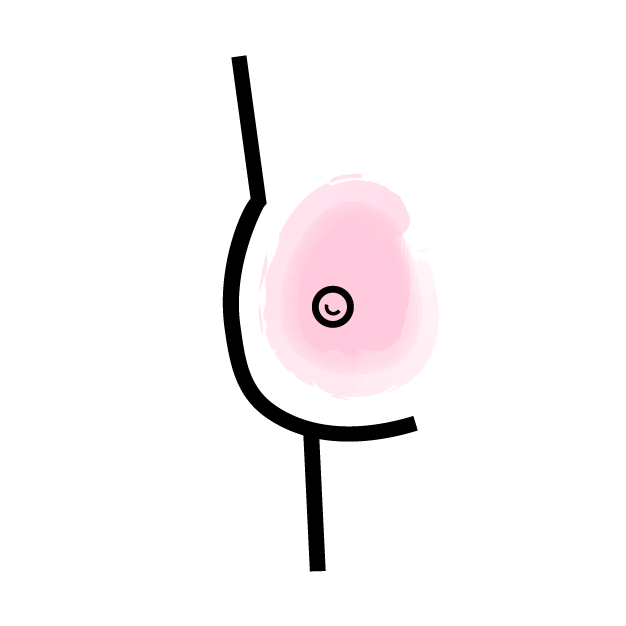

what can increase your breast cancer risk?
Both genetic and environmental factors can be causes of breast cancer, and it is often a combination of both. The list below is not a complete list of causes, but just some highlights.
family + genetics
Genetics including race, gender and age are all factors that can cause breast cancer: respectively, especially in Caucasian women, females and individuals of a higher age. Also, if your mother, father, sister or child has ovarian or breast cancer, you have a higher risk of getting breast cancer later on. That risk is increased if the relative was diagnosed before age 50. Additionally, if you have had breast cancer in one breast before, you have a higher risk of getting breast cancer in the other.
obesity
Being obese can increase your risk of getting breast cancer. This is also increased if you have gone through menopause.
reproductive history
Menstruation before age 12, menopause after age 55, never giving birth or having a child at a higher age are all risk factors for breast cancer.
lack of exercise
An inactive lifestyle with not a lot of exercise can increase your breast cancer risk.
alcohol consumption
Drinking alcohol also heightens your risk of getting breast cancer. The more alcohol you drink, the higher your risk.
poor diet
A diet filled with little fruits and veggies but a lot of saturated fat can increase your chances of getting breast cancer.
what are some signs of breast cancer?
Not everyone who gets breast cancer experiences these symptoms or signs. However, some people do. This is not a complete list of signs, but just some highlights.

change in breast look
- Unexplained change in breast shape or size
- One breast is recently larger or smaller than the other
- Dimpling
- Unexplained swelling
- Unexplained shrinkage
- Inverted or inward nipple
- Breast, areola or nipple skin has become red, swollen or scaly, or has ridges or pitting similar to an orange's skin
change in breast feel
- Nipple tenderness
- Thickening or lump in or around the underarm or breast area
- Change in skin texture or increased pore size in the breast skin, similar to the texture of an orange peel
breast pain
- Note: breast pain usually is not a sign of breast cancer
- Note: breast pain can be caused from puberty, menstruation, benign cysts, menopause and even medicines
- Symptoms can include tenderness, discomfort or breast or underarm pain
nipple discharge
- Clear discharge
- Bloody discharge
- Note: milky discharge while not breastfeeding is not linked with breast cancer, but should be checked with your doctor
lumps
- Lump or thickening near or in the underarm or breast area
- Note: cysts also feel like lumps and are usually harmless
- Cysts are more prevalent in premenopausal women, and can cause pinpointed pain
Emma Sisk, 2020.